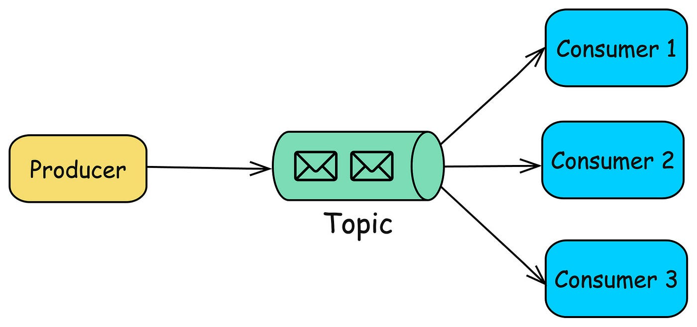
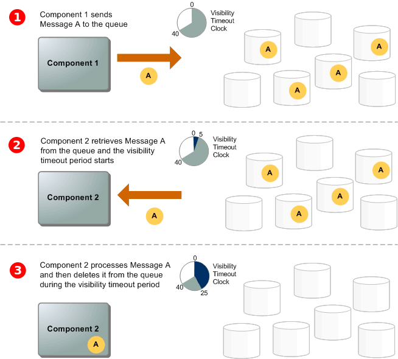
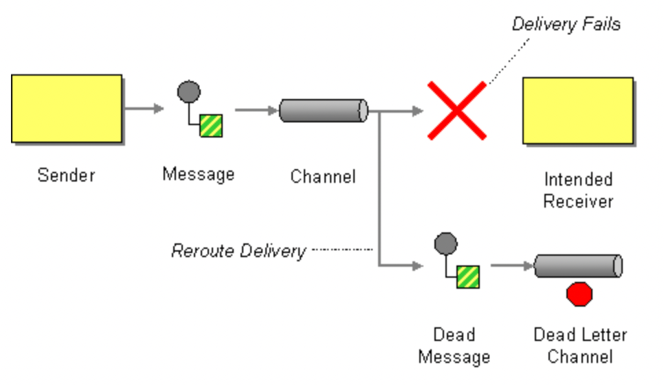
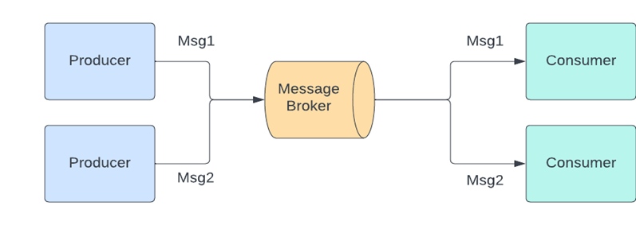

What a Message Queue Really Is
Ashmita Pandey · · System Design · Distributed Systems · Messaging

In this article, we will break down what a message queue really is by designing one from first principles and understanding the constraints that shape real-world systems.
Message queues are a fundamental building block in distributed systems. We interact with them through APIs, configurations, and operational dashboards, but rarely pause to examine the assumptions they make about failure, ownership, and time.
Instead of starting with a specific technology, this article takes a bottom-up approach. We will build a message queue layer by layer. Each layer introduces a new constraint that breaks our previous design and forces us to rethink how the system should behave. The goal is not to implement a production system, but to understand the reasoning that makes real message queues look the way they do.
Layer 0: The Simplest Possible Message Queue
At its core, a message queue consists of three actors:
- Producers that publish messages
- Consumers that receive messages
- A queue that stores messages
Data structure
The queue is a simple FIFO list.
[m1, m2, m3, m4]Operations
- Enqueue: a producer appends a message to the queue
- Dequeue: a consumer removes the message at the front
Once a message is dequeued, the system assumes it is processed. There is no tracking, no retries, and no acknowledgements.
Guarantees and limitations
This design preserves FIFO ordering and is easy to reason about. However, if a consumer crashes after dequeuing a message, that message is lost permanently. The queue has no knowledge of who took it or whether it was processed.

Layer 1: Handling Consumer Failure
Now we introduce a single real-world constraint. A consumer can crash after receiving a message.
With this change, deleting a message at delivery time is unsafe. Delivery and completion must be treated as separate events.
Message lifecycle
Messages now move through explicit states:
READY → IN FLIGHT → DONEThis introduces acknowledgements. A consumer must explicitly signal that it has successfully processed a message before the queue can delete it.
New responsibilities of the queue
The queue must now:
- Track which messages are currently in flight
- Track which consumer owns each message
- Decide what to do if a consumer disappears
Data structures
- Ready queue containing messages available for delivery
- In-flight structure tracking message ownership
Example:
ready = [m2, m3]in_flight = { c1: m1 }
If an acknowledgement never arrives, the message is not complete and must eventually beretried.

Redelivery and Retry Placement
When a consumer crashes, the queue must reclaim its in-flight messages. A key design question arises. Where should failed messages be placed?
Requeue at the front
This prioritizes earlier messages but risks repeated retries blocking the entire queue.
Requeue at the back
This allows other messages to progress but weakens strict FIFO guarantees.
Practical systems
Real message queues often use:
- Delayed retry queues
- Exponential backoff
- Dead-letter queues after repeated failures
These mechanisms prevent individual messages from degrading overall system throughput.

Consequences of Acknowledgement-Based Design
Introducing acknowledgements leads to several unavoidable outcomes.
Duplicate processing
If a consumer processes a message but crashes before acknowledging it, the message will be redelivered. This results in at-least-once delivery semantics and requires consumers to handle duplicates safely.
Failure detection is probabilistic
The queue cannot know with certainty whether a consumer is dead or merely slow. It infers state using timeouts, heartbeats, or connection status.
Time becomes a first-class concern
Reclaiming messages too early increases duplicates. Waiting too long reduces throughput. Timeout values are always approximations.
At this point, a key insight becomes clear.
Message queues are not primarily about storing messages. They are about tracking responsibility.
Why Acknowledgement Transport Matters
Acknowledgements encode more than completion. They implicitly answer:
- Who is acknowledging the message
- Which message is being acknowledged
- Whether the acknowledgement is still valid
With long-lived connections, message ownership can be tied directly to the connection. If the connection drops, ownership is revoked automatically and in-flight messages are reclaimed.
With stateless protocols, acknowledgements can arrive after the queue has already assumed the consumer is inactive. This complicates ownership validation and recovery logic.
Transport choices therefore directly affect correctness, not just performance.
Layer 2: Multiple Consumers
We now allow multiple consumers to pull from the same queue.
The message lifecycle remains unchanged, but ownership is distributed.
in_flight = {c1: [m6], c2: [m5], c3: [m4]} The queue must now answer new questions:
- How are messages assigned to consumers?
- How many messages can one consumer hold at a time?
- What does fairness mean in this system?
At this stage, the queue becomes a scheduler rather than a simple dispatcher.

Flow Control and Backpressure
If consumers can pull messages without limits, fast consumers can monopolize the queue while slow consumers starve.
A common solution is credit-based delivery. Each consumer is allowed a fixed number of in-flight messages. Messages are delivered only when credit is available, and acknowledgements free that credit.
This introduces backpressure and prevents unbounded message accumulation.
Ordering Guarantees
The queue can still deliver messages in FIFO order. However, once messages are processed concurrently, completion order is no longer guaranteed.
Delivery order and processing order are fundamentally different concepts in concurrent systems. Understanding this distinction is essential when designing consumers.
Handling Slow and Failed Consumers
Distinguishing between a slow consumer and a failed one is one of the hardest problems in message queue design.
Connection-based liveness
As long as the consumer’s connection is alive, it is considered active. If the connection drops, in-flight messages are reclaimed immediately.
Visibility timeouts
Messages become invisible for a fixed duration. If no acknowledgement arrives within that window, the message becomes available again.
Short timeouts increase duplicate processing. Long timeouts reduce throughput. There is no perfect value, only informed tradeoffs.
Conclusion
By building a message queue from first principles, we can see how complexity emerges naturally from simple constraints.
Ignoring failures allows for simple designs but breaks immediately in real systems. Handling consumer failure introduces acknowledgements and ownership tracking. Supporting multiple consumers transforms the queue into a scheduler where fairness, flow control, and backpressure matter.
Across all layers, the core responsibility of a message queue remains constant.
It must track who owns a message at any point in time and safely reclaim that ownership when things go wrong.
When viewed through this lens, the architecture of message queues becomes easier to reason about, and their design decisions start to feel inevitable rather than arbitrary.
Thanks for reading!